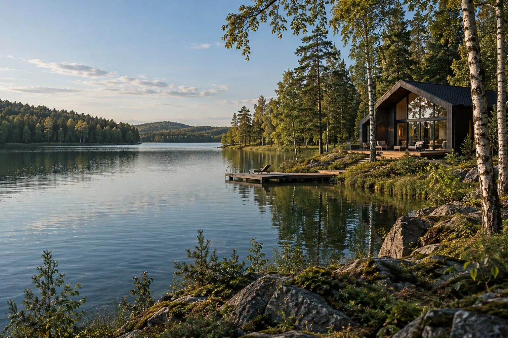
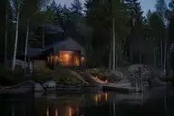

Можайское водохранилище
До 2 гостей · 24 м²
Светлая спальня с видом на воду и небольшим рабочим столом.
До 4 гостей · 34 м²
Угловое окно, открытый вид на берег и кресло для чтения.
До 4 гостей · 46 м²
Спальная зона и гостиная с диваном в одном открытом пространстве.
До 6 гостей · 64 м²
Отдельная спальня, большая гостиная и терраса с видом на воду.
Ресторан с панорамными окнами и открытой террасой.

Деревянная баня на берегу.